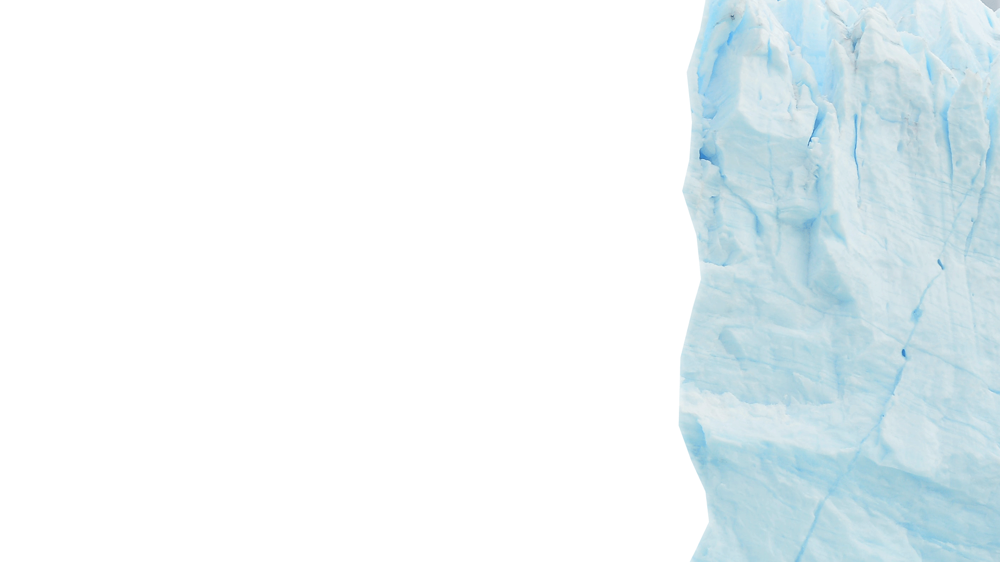
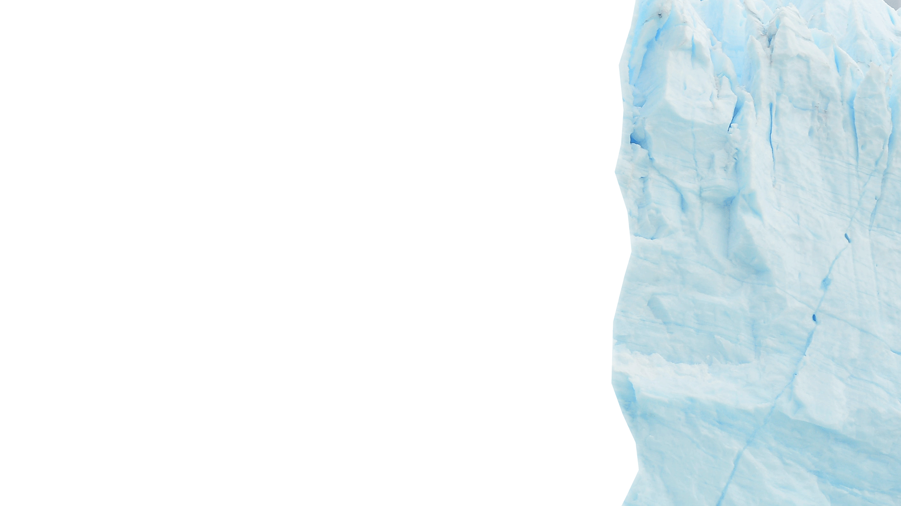
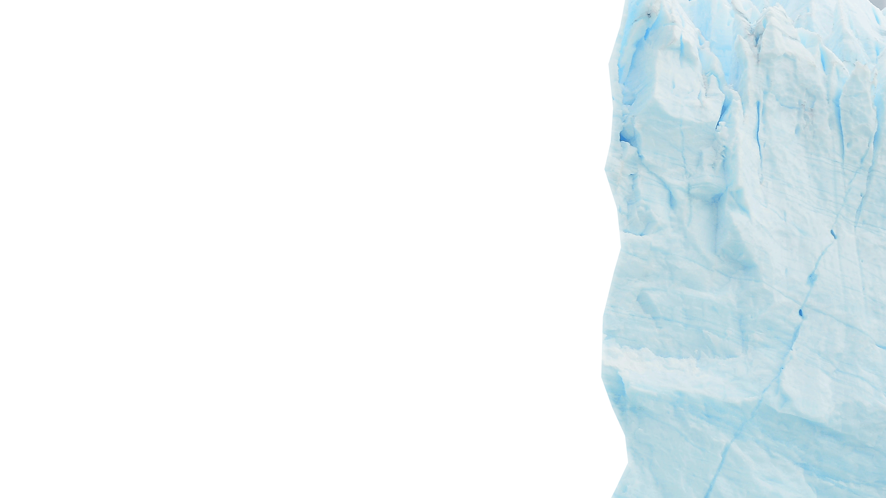
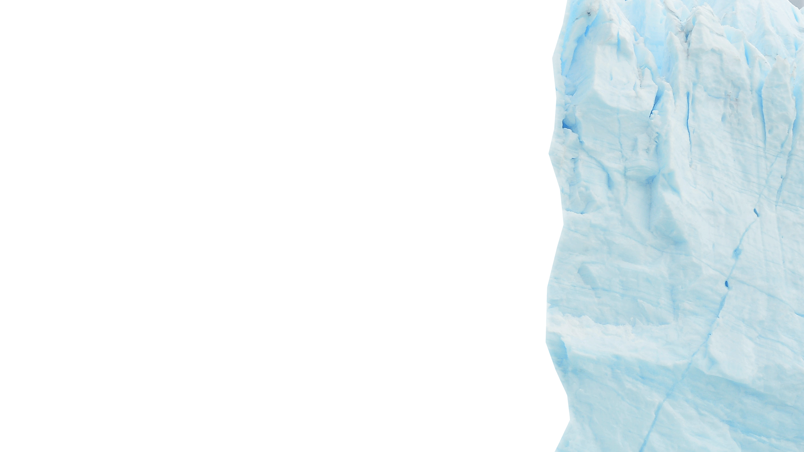

Mount Rinjani


 



Gunung Rinjani adalah gunung tertinggi kedua di Indonesia dengan ketinggian mencapai 3.726 meter di atas permukaan laut.
Gunung Rinjani terletak di Pulau Lombok, Nusa Tenggara Barat, Indonesia.
Rinjani adalah gunung berapi stratovolcano yang masih aktif. Letusan terakhirnya terjadi pada tahun 2015 dan 2016.
Gunung Rinjani memiliki danau kawah yang disebut Danau Segara Anak. Danau ini terkenal dengan warna airnya yang biru cerah dan ukurannya yang luas.
Gunung Rinjani memiliki nilai budaya dan spiritual bagi masyarakat setempat, terutama Suku Sasak dan Suku Bali. Gunung ini dianggap sebagai tempat suci dan sering dijadikan lokasi upacara adat.
Gunung Rinjani sangat populer di kalangan pendaki gunung, baik dari dalam maupun luar negeri. Jalur pendakian utama biasanya dimulai dari desa Sembalun dan Senaru
Rinjani memiliki ekosistem yang beragam, mulai dari hutan tropis, padang rumput, hingga tundra alpin. Ini memberikan habitat bagi berbagai flora dan fauna, termasuk spesies endemik.
Pendaki Rinjani dapat menikmati pemandangan spektakuler dari puncak gunung, termasuk Danau Segara Anak, gunung-gunung sekitar, dan pemandangan Pulau Lombok dari ketinggian.
Rinjani dilindungi sebagai bagian dari Taman Nasional Gunung Rinjani, yang didirikan untuk melestarikan keanekaragaman hayati dan keindahan alam gunung tersebut.
Karena statusnya sebagai gunung berapi aktif, Gunung Rinjani tetap menjadi objek pemantauan oleh para ahli vulkanologi untuk memastikan keamanan masyarakat setempat dan wisatawan.